10 April, 2022. Right at the end of COVID-19.
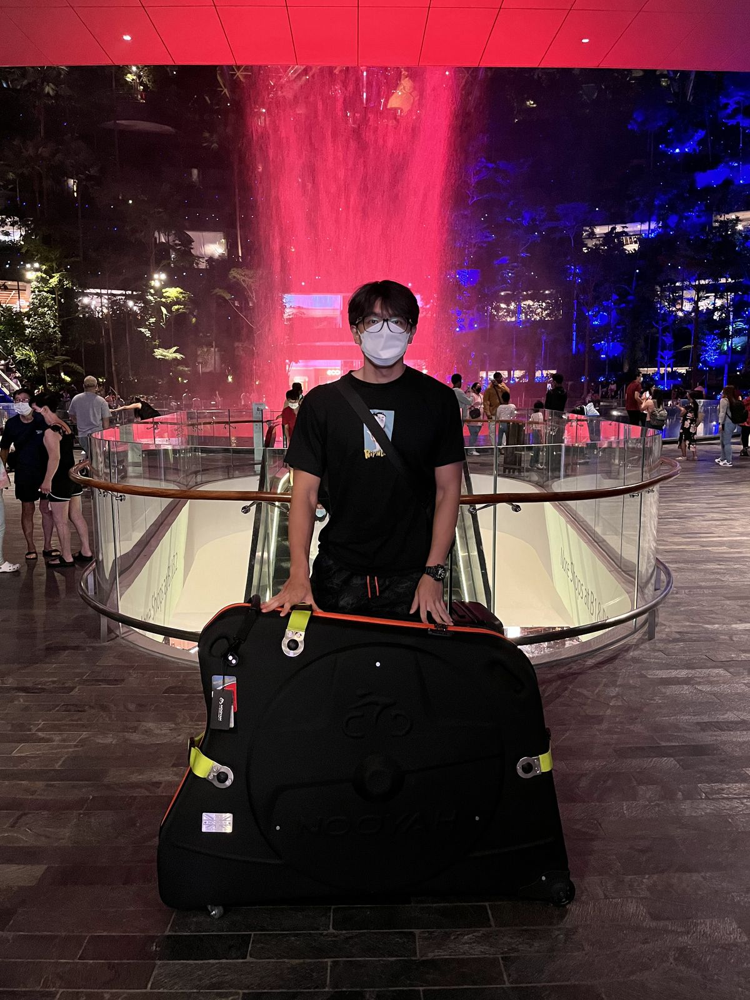
Travel restrictions are easing, and countries are finally opening up their borders.
It was intense back then as a Singaporean. The island city paradise became an island prison. During the lockdown, we were all trapped here.
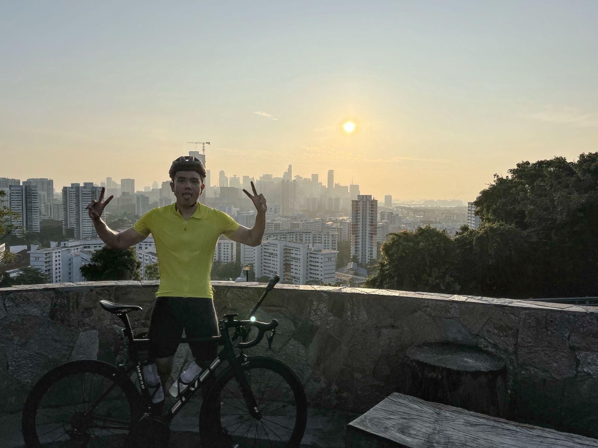
Towards the end of 2021, I picked up cycling.
I immediately knew this was my next sport. It had everything.
I could train, compete, and the thing that excites the most – I could explore.
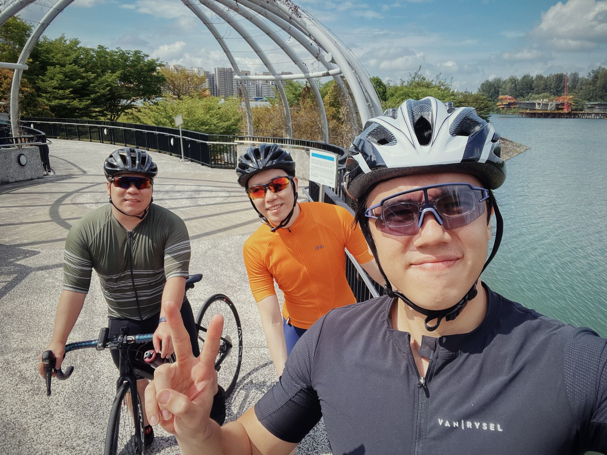
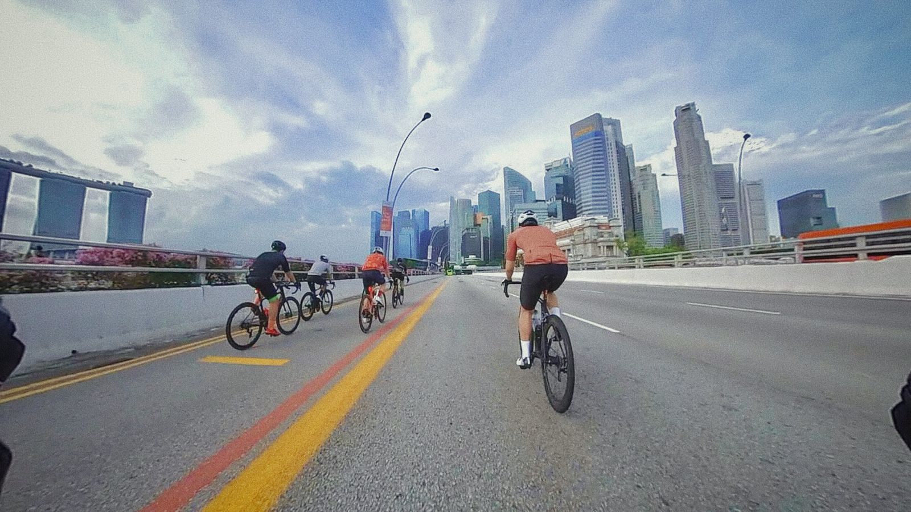
I cycled with a few colleagues in those early days and we explored Singapore.
There’s so much more to see and I can do so much with my bike.
That was the start of everything.
Korea
Korea was one of the few countries that opened up first. My wife and I have never been there, so, why not?
Looking back, I wasn’t sure what I was getting myself into. I just dived in head first.
I created a few routes on Strava, and that was it.
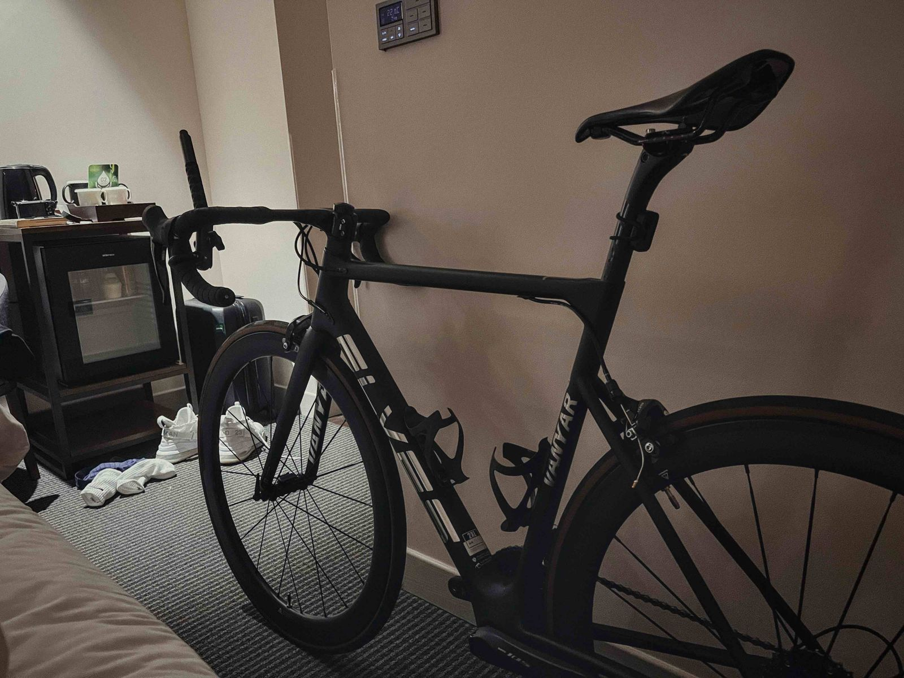
I brought my Elves Vanyar with me. It’s a chinese rim brake bike. I built it myself. That’s also how I became independent when it comes to bike maintenance.
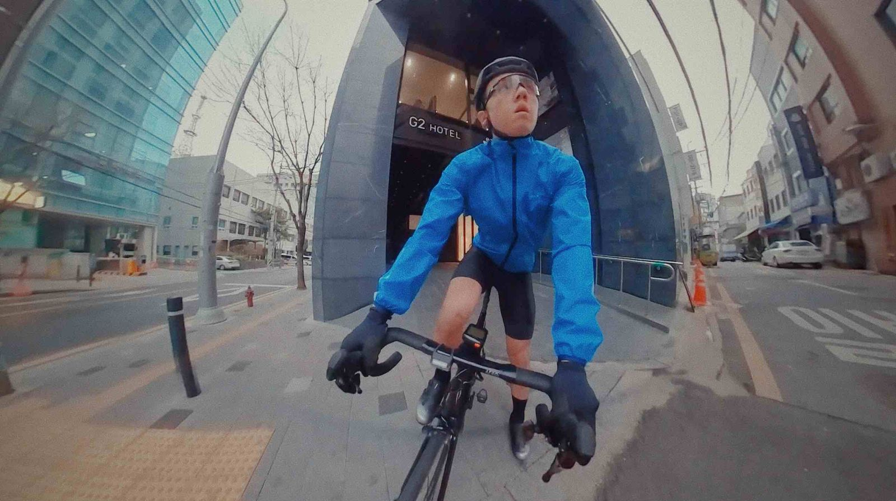
I think I was one of the earliest adopters of using a 360 camera on a bike.
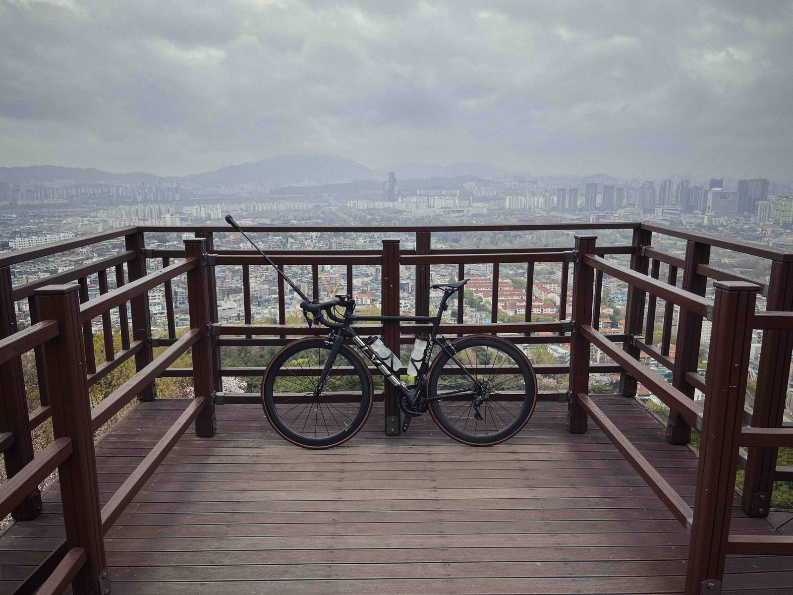
This was back in 2022. The Insta360 X2 was held by a clamp on the handlebar. This photo was taken at the end of this ride. At the top of Bugaksan.
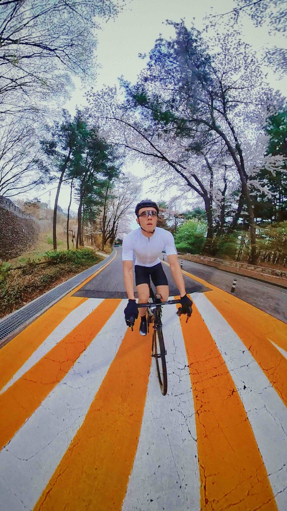
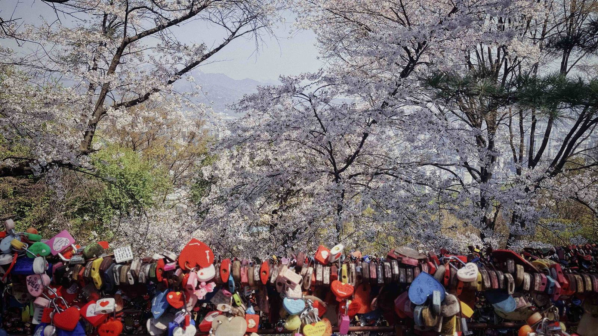
This route is a short ride in Seoul. It takes you first to Namsan, which was crazy beautiful in Spring when the Cherry Blossoms are in full bloom.
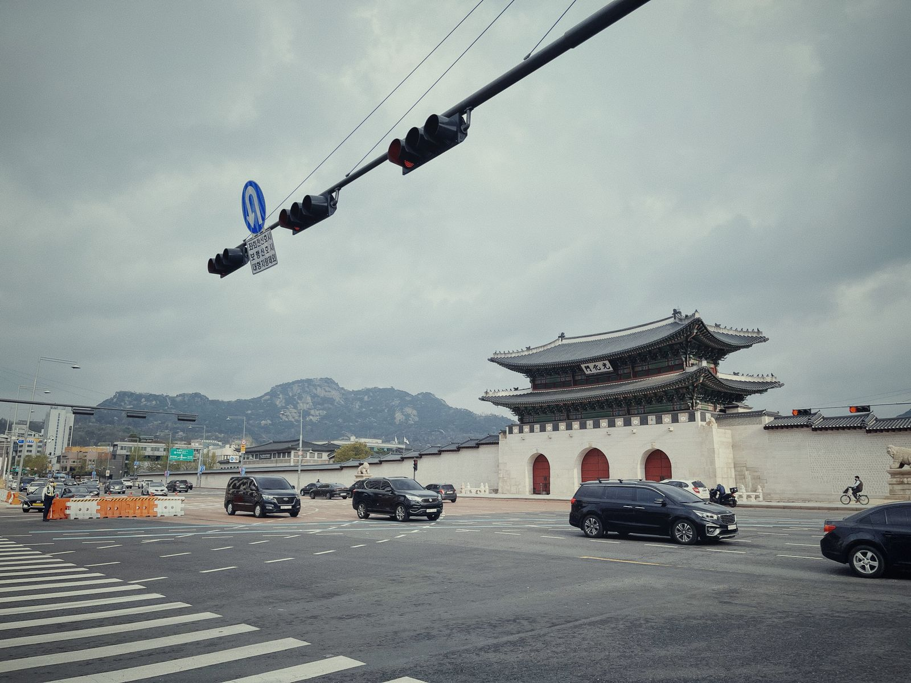
The route then takes us towards Bugaksan, just behind the historic Gyeongbokgung Palace.
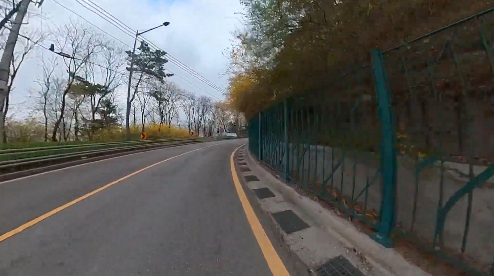
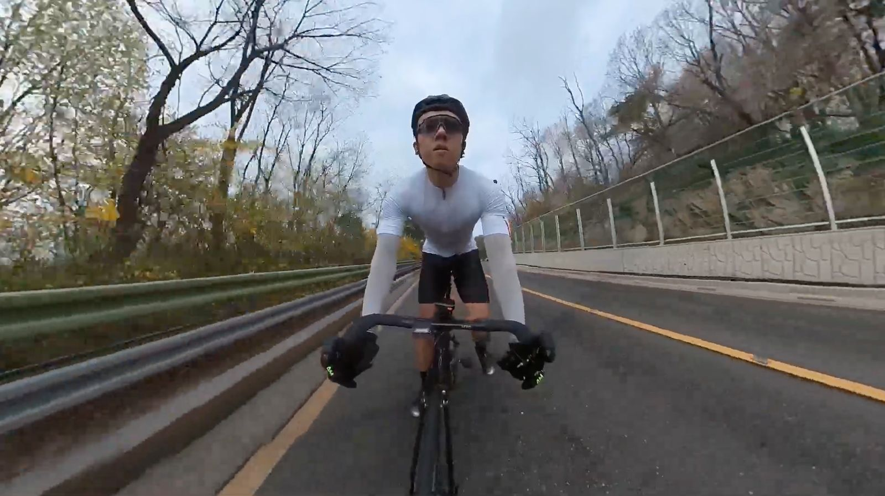
I don’t recall the Bugaksan climb to be visually spectacular.
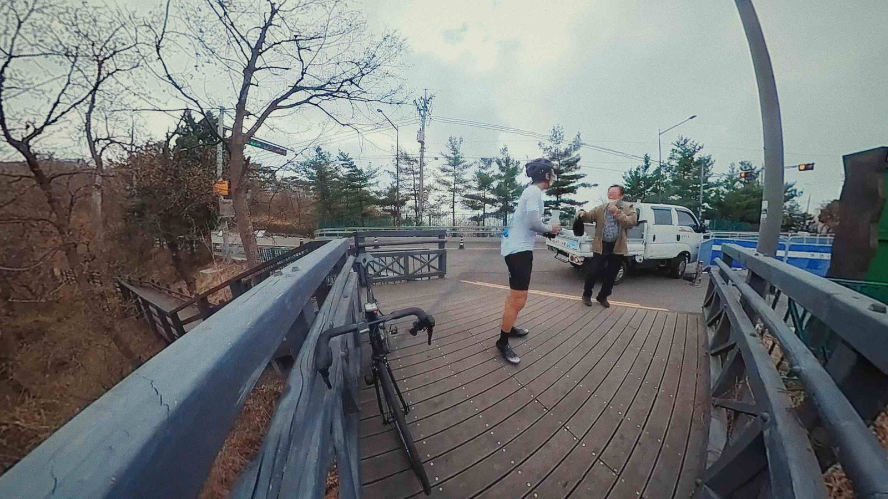
Skip it if you want, but if you want a quick ride around Seoul, you can consider adding it into your plan.